Lezen, luisteren en spreken B1
Oefen voor het Staatsexamen NT2 B1 met eigen teksten, een voorleesstem en schrijf- en spreekopdrachten met voorbeeldantwoord – ook zonder internet.
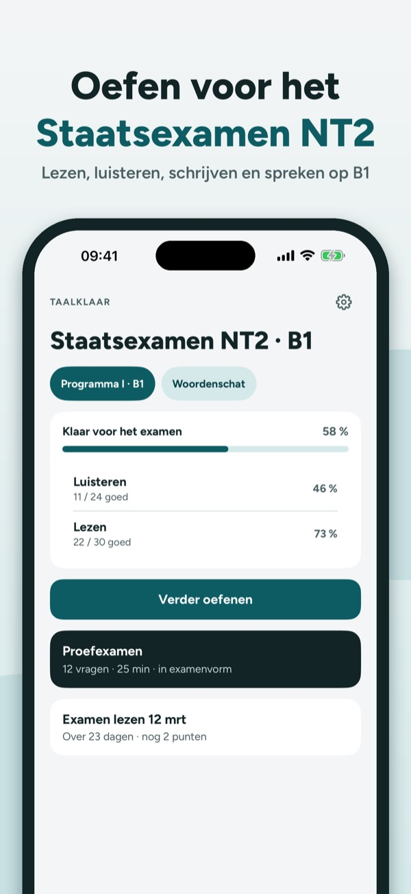
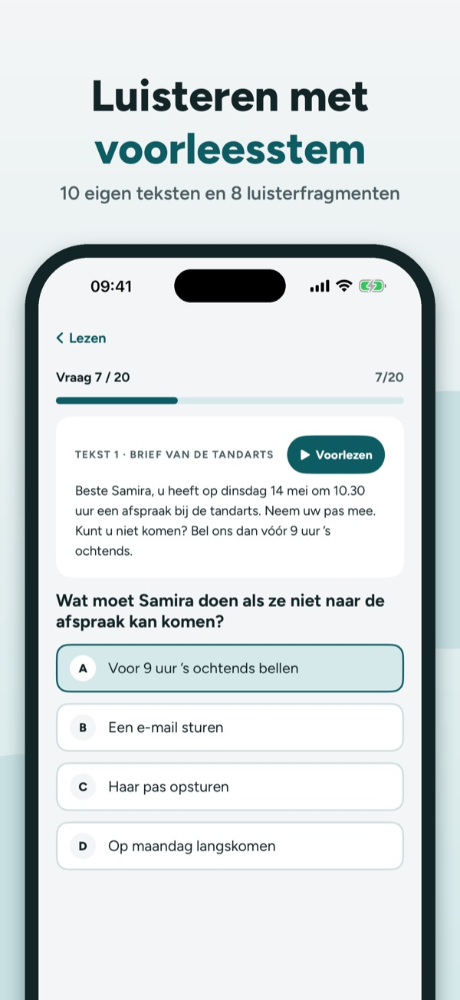
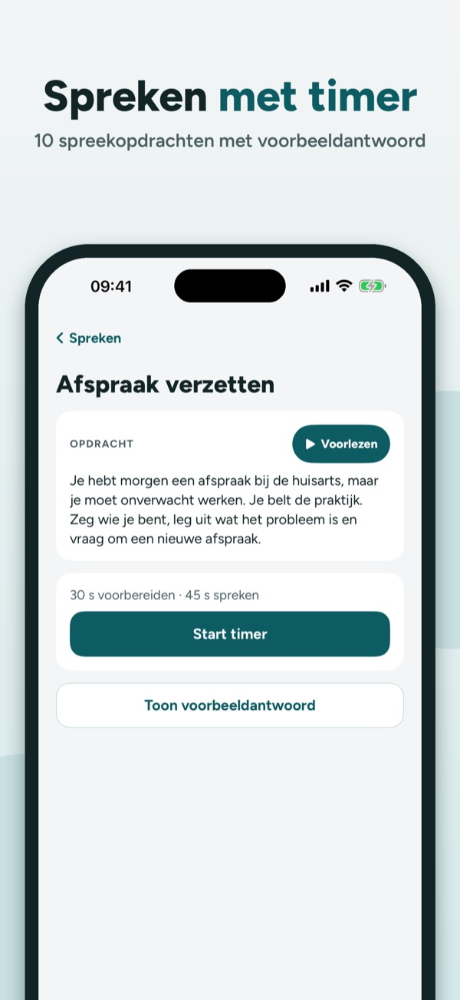
Taalklaar helpt je oefenen voor je taalexamen op B1-niveau: lezen, luisteren, schrijven en spreken, met teksten die wij zelf schrijven.
• Vragen per onderwerp met uitleg bij elk antwoord
Je kunt 20 vragen, de begrippenlijst en de checklist zonder aankoop gebruiken. De volledige versie is een eenmalige aankoop die alle vragen, proefexamens en statistiek ontgrendelt. Geen abonnement.
Taalklaar is onafhankelijk en niet verbonden aan DUO, het College voor Toetsen en Examens of andere examenorganisaties. Alle teksten zijn door ons geschreven.
Terms of Use (EULA): https://www.apple.com/legal/internet-services/itunes/dev/stdeula/
Privacy: https://baytechbv.github.io/privacy/taalexamen-eu/
Læsning, lytning og skrivning
Øv til Prøve i Dansk 3 med vores egne tekster, oplæsning på telefonen og skrive- og taleopgaver med eksempelsvar – også uden internet.
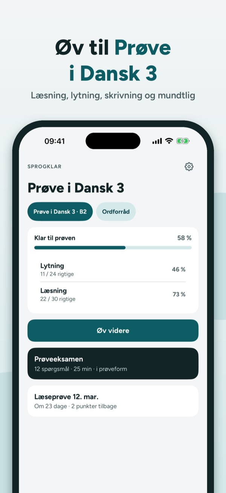
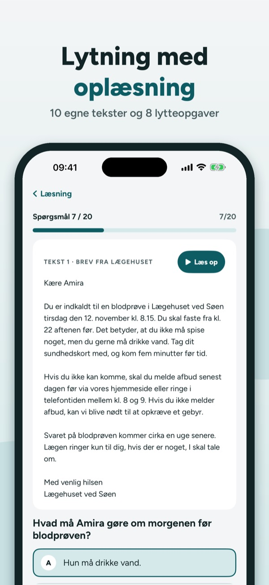
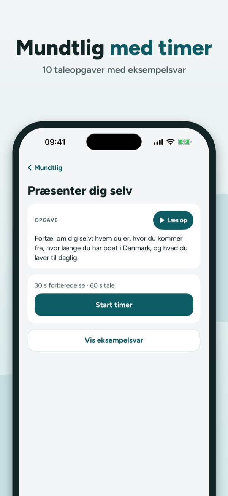
Sprogklar hjælper dig med at øve til Prøve i Dansk 3: læsning, lytning, skrivning og mundtlig, med tekster vi selv har skrevet.
• Spørgsmål pr. emne med forklaring til hvert svar
Du kan øve 20 spørgsmål, ordlisten og tjeklisten uden køb. Den fulde version er et engangskøb, der låser alle spørgsmål, prøveeksamener og statistik op. Intet abonnement.
Sprogklar er uafhængig og ikke tilknyttet Styrelsen for International Rekruttering og Integration, sprogcentre eller prøveafholdere. Alle tekster er skrevet af os.
Terms of Use (EULA): https://www.apple.com/legal/internet-services/itunes/dev/stdeula/
Privacy: https://baytechbv.github.io/privacy/taalexamen-eu/
Lesing, lytting og skriving
Øv til Norskprøven B1 med våre egne tekster, opplesning på telefonen og skrive- og muntlige oppgaver med eksempelsvar – også uten nett.
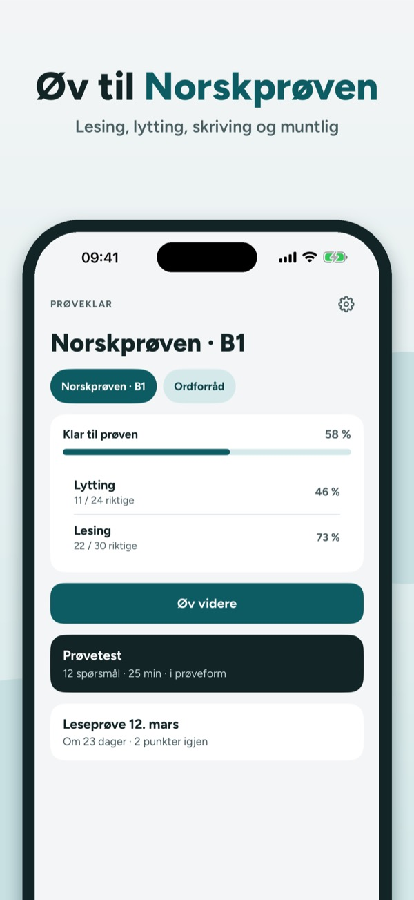
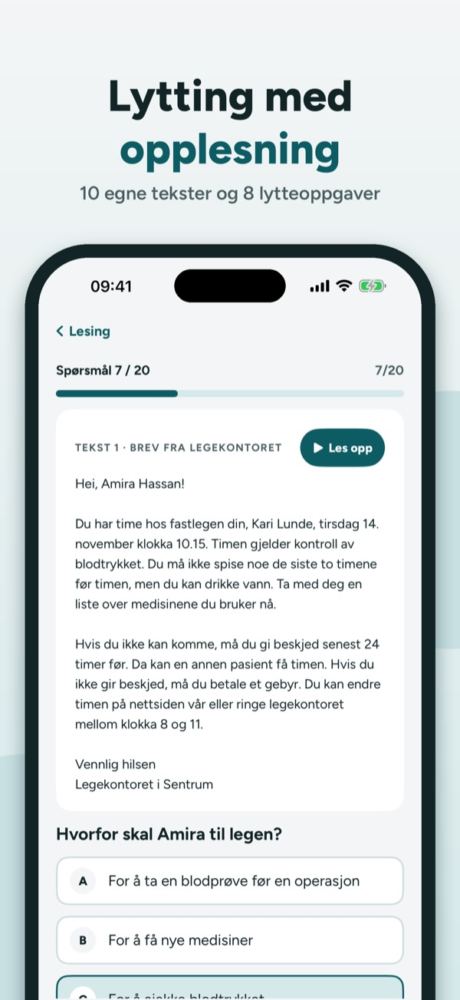
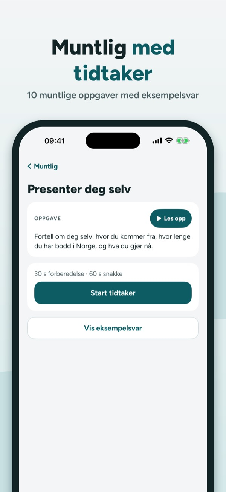
Prøveklar hjelper deg å øve til Norskprøven på B1-nivå: lesing, lytting, skriving og muntlig, med tekster vi har skrevet selv.
• Spørsmål per emne med forklaring til hvert svar
Du kan øve på 20 spørsmål, ordlisten og sjekklisten uten kjøp. Fullversjonen er et engangskjøp som låser opp alle spørsmål, prøvetester og statistikk. Ingen abonnement.
Prøveklar er uavhengig og ikke tilknyttet HK-dir eller andre prøvearrangører. Alle tekster er skrevet av oss.
Terms of Use (EULA): https://www.apple.com/legal/internet-services/itunes/dev/stdeula/
Privacy: https://baytechbv.github.io/privacy/taalexamen-eu/
Lue, kuuntele, kirjoita – B1
Harjoittele YKI-testiä omilla teksteillämme, puhelimen ääneenluvulla sekä kirjoitus- ja puhetehtävillä mallivastauksineen – myös ilman nettiä.
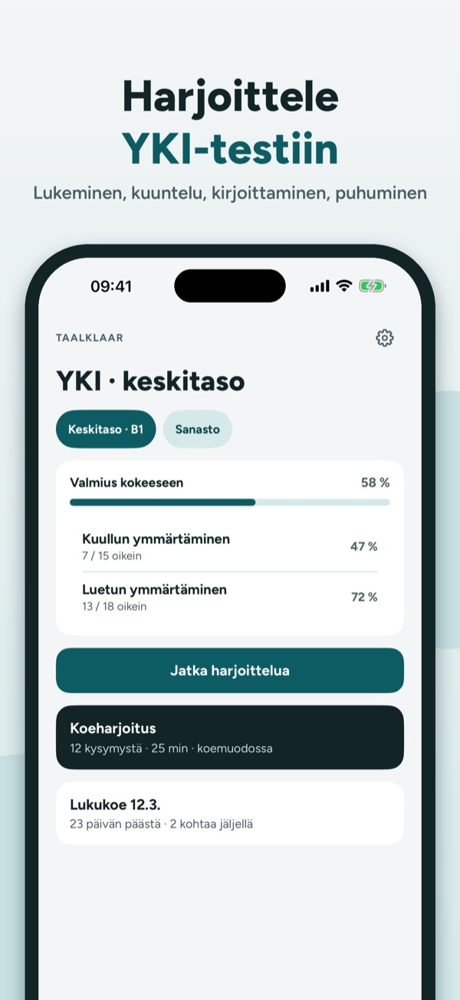
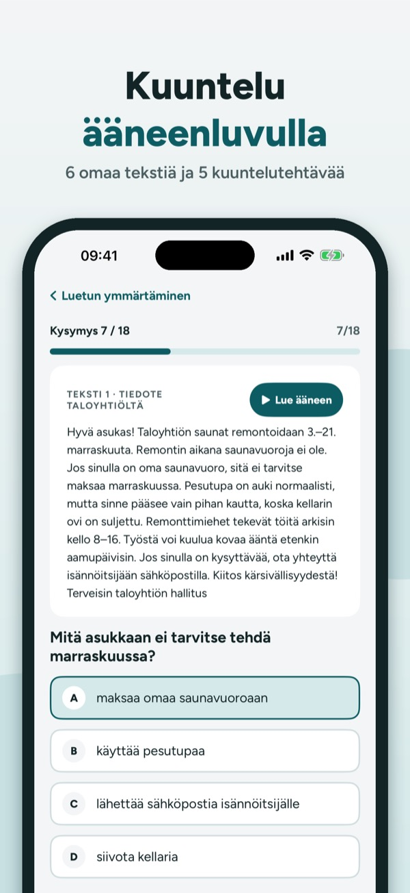
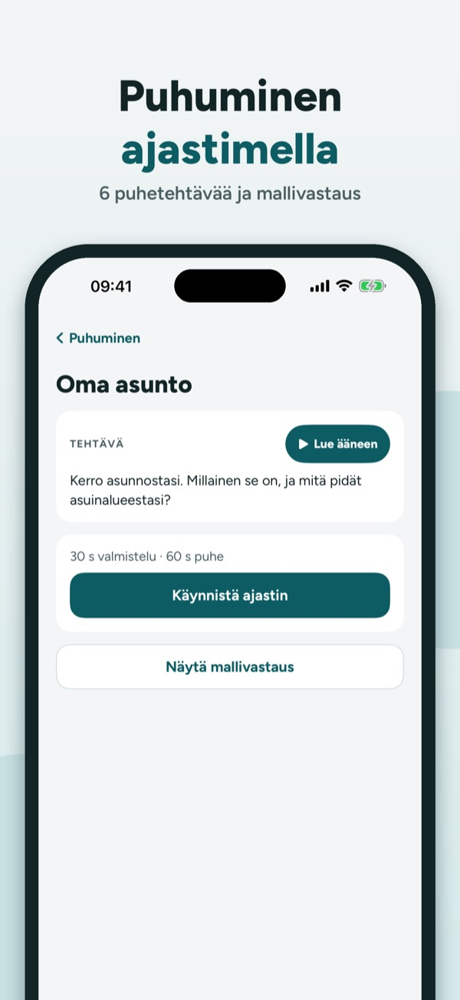
Taalklaar auttaa harjoittelemaan YKI-testin keskitasoa: luetun ja kuullun ymmärtämistä, kirjoittamista ja puhumista omilla teksteillämme.
• Kysymykset aiheittain, selitys jokaiseen vastaukseen
Voit harjoitella 20 kysymystä, sanastoa ja tarkistuslistaa ilman ostoa. Täysi versio on kertaosto, joka avaa kaikki kysymykset, koeharjoitukset ja tilastot. Ei tilausta.
Taalklaar on itsenäinen eikä liity Opetushallitukseen tai testinjärjestäjiin. Kaikki tekstit ovat omiamme.
Terms of Use (EULA): https://www.apple.com/legal/internet-services/itunes/dev/stdeula/
Privacy: https://baytechbv.github.io/privacy/taalexamen-eu/
Lesen, Hören, Schreiben üben
Übe für den Deutsch-Test für Zuwanderer (B1) mit eigenen Texten, Vorlesestimme und Schreib- und Sprechaufgaben mit Musterantwort – auch offline.
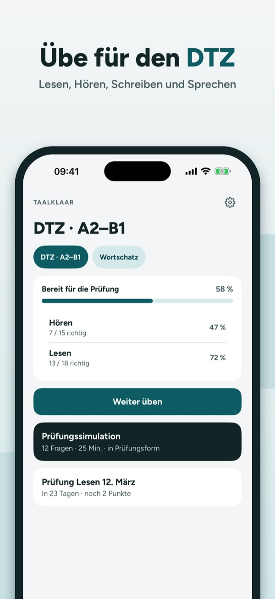
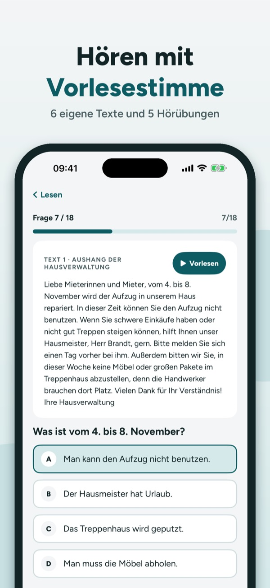
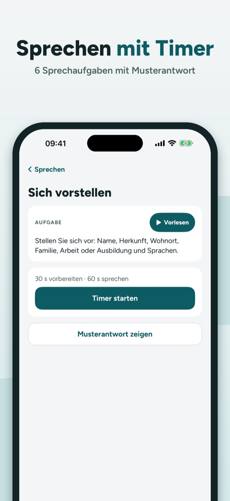
Taalklaar hilft dir, für deine Sprachprüfung auf B1-Niveau zu üben: Lesen, Hören, Schreiben und Sprechen, mit Texten, die wir selbst schreiben.
• Fragen nach Thema mit Erklärung zu jeder Antwort
20 Fragen, die Begriffe und die Checkliste kannst du ohne Kauf nutzen. Die Vollversion ist ein Einmalkauf und schaltet alle Fragen, Simulationen und die Statistik frei. Kein Abo.
Taalklaar ist unabhängig und nicht mit dem BAMF oder Prüfungsanbietern verbunden. Alle Texte sind selbst geschrieben.
Terms of Use (EULA): https://www.apple.com/legal/internet-services/itunes/dev/stdeula/
Privacy: https://baytechbv.github.io/privacy/taalexamen-eu/